Базовая теория
Глава 6.22. Анимация Object3D
Рассмотрим, как анимировать один объект Object3D.
Object3D и его наследуемые классы (Mesh, Points, Line,
LineSegments, LineLoop) управляют
положением в пространстве и масштабом.
В каждом цикле рендеринга
мы можем менять компоненты position,
rotation,
scale.
На практике можно использовать готовые анимационные библиотеки. Многие из них работают не только с элементами DOM, но и с любыми JS-абстракциями, которыми по сути являются объекты Three.js, пока не попадают в Renderer.
На курсе мы будем работать с анимацией
с помощью
requestAnimationFrame, как
и в случае анимации в обычном
контексте canvas.
Анимация position, rotation,
scale в 3D имеет
свои особенности по сравнению с анимацией
на плоскости.
Анимация position
Каждая компонента position меняется независимо
от других компонент. При
перемещении из точки A в точку B, когда
все координаты меняются
с одинаковой относительной
скоростью (от 0 до 1 —
прогресс easing).
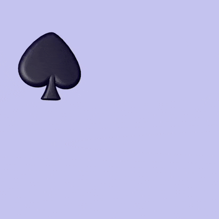
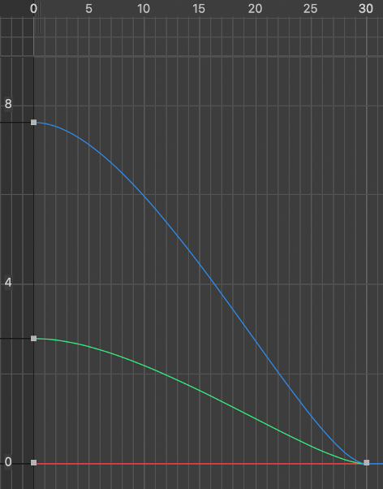
Для того, чтобы траектория была кривая, координаты должны меняться с разной относительной скоростью.
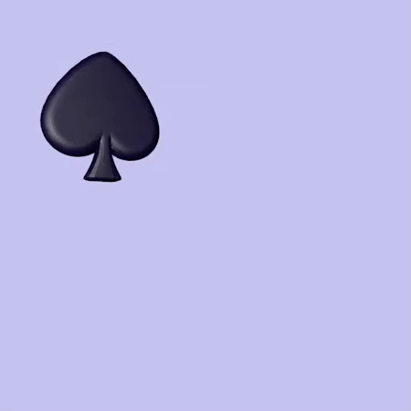
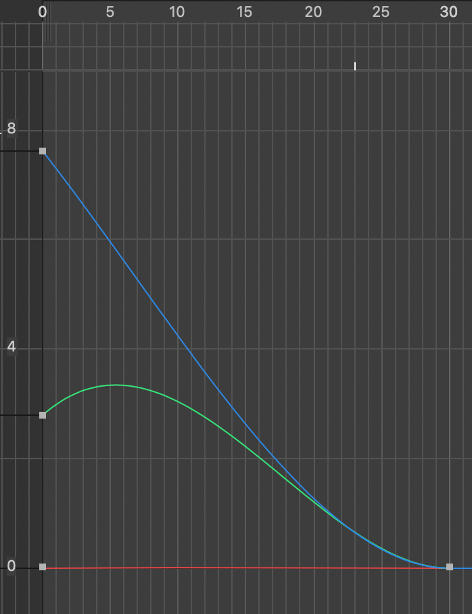
Существует несколько способов описывать траекторию и движение вдоль траектории.
- Параметрически
- Кривые Cubic-Bezier
- Динамически
1. Параметрическое описание движения
При параметрическом описании задается 1-2 параметра или выбирается 1 параметр из (x, y, z). И остальные перед рендерингом рассчитываются по формулам в зависимости от него/них.
Например,
object3d.position.x = x0 + ease(progress) * (x1 - x2);
object3d.position.y = 100 * Math.sin(2 * Math.PI * x1 / 200);
То объект будет продвигаться вдоль X и при этом колебаться вверх-вниз по синусоиде.
Добавим аналогичную функцию с косинусом для Z и получим движение по спирали:
object3d.position.x = x0 + ease(progress) * (x1 - x2);
object3d.position.y = 100 * Math.sin(2 * Math.PI * x1 / 200);
object3d.position.z = -100 * Math.cos(2* Math.PI * a / 200);
Без сдвига по фазе Y и Z будут синхронизированы, и тогда в плоскости YZ движение будет по прямой, а это уже не так интересно.
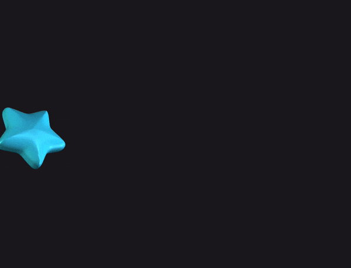
Изменим период для Z
object3d.position.x = x0 + ease(progress) * (x1 - x2);
object3d.position.y = 100 * Math.sin(2 * Math.PI * x1 / 200);
object3d.position.z = -100 * Math.cos(2* Math.PI * a / 150);
И получим более хаотичные колебания.
Аналогично можно добавить зависимости для амплитуды. Или выбрать другие зависимости: xx, xx*x, exp (x). И так далее, и так далее.
А если добавим синусоидальную зависимости от времени для X, и сделаем для всех координат разные периоды, тогда получим хаотичные колебаний вокруг точки отсчета.
object3d.position.x = -50 + 100 * Math.sin(2 * Math.PI * t / 2.5);
object3d.position.y = -50 - 100 * Math.cos(2 * Math.PI * t / 5);
object3d.position.z = -50 - 100 * Math.cos(2 * Math.PI * t / 7.5);
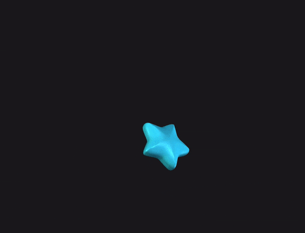
2. Cubic-Bezier
С Cubic-Bezier вы уже сталкивались при анимации на плоскости. В объеме также можно ими пользоваться. Только выглядят они сложнее.
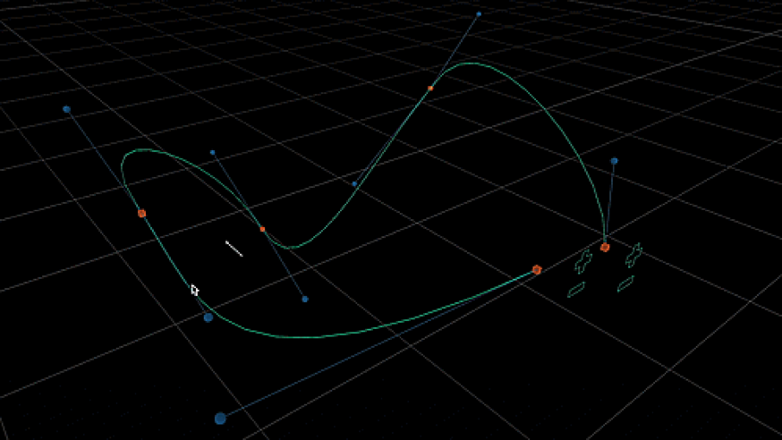
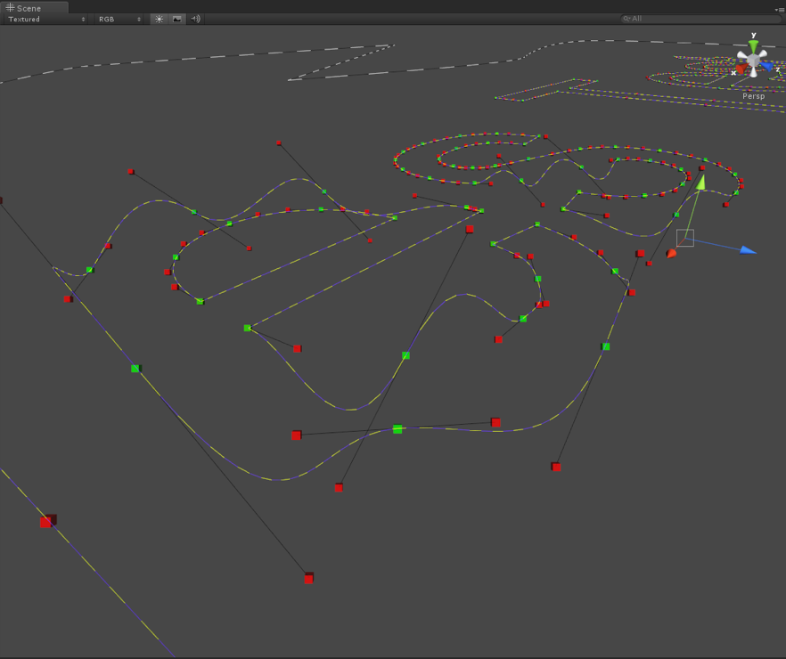
С ними проще работать в 3D-редакторах. В коде эта задача нетривиальная, но в этом случае вы можете пусть объект вдоль по траектории и легко управлять скорость вдоль траектории с помощью easing.
3. Динамическое описание движения
Динамический способ подразумевает, что вы моделируете физический процесс, например, падения, колебания, столкновения, другого внешнего воздействия. Существуют готовые движки, которые моделируют основные процессы и позволяют моделировать ситуацию на более высоком уровне абстракции.
Анимация rotation
Когда мы говорим о вращении, подразумеваем, что есть ось или центральная точка, относительно которой это вращение происходит.
Для удобства описания поворота объекта используются углы Эйлера, как упоминалось ранее.
new THREE.Euler( 0, 1, 1.57, 'XYZ' );
Для анимации компонент вращения rotation.x,
rotation.y,
rotation.y можно использовать те же
техники, что и для анимации
перемещения. Но у нее есть свои особенности.
Особенность углов Эйлера в том, что положение зависит от порядка применения углов поворота, при этом каждый следующий поворот производится с объектом, который уже повернут вокруг предыдущей оси.
mesh.rotation.copy(new THREE.Euler(-Math.PI / 6, Math.PI / 6, Math.PI / 60, 'XYZ'));
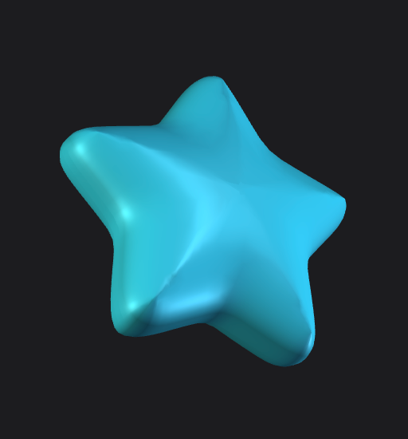
mesh.rotation.copy(new THREE.Euler(-Math.PI / 6, Math.PI / 6, Math.PI / 60, 'YXZ'));
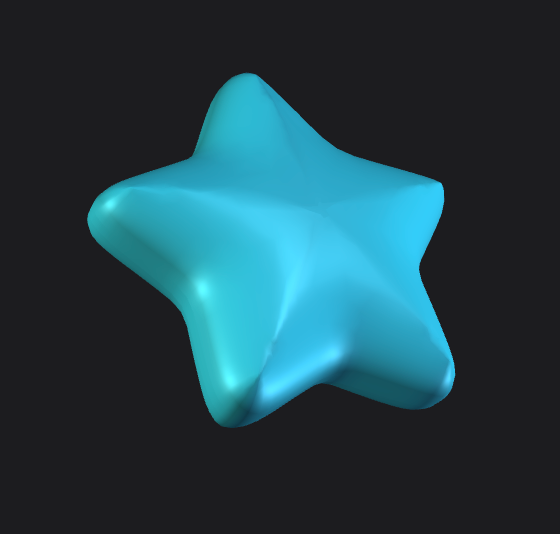
Когда мы записываем начальные
Euler(rX0, rY0, rZ0) и конечные углы
Euler(rX1, rY1, rZ1), обычный Tween-переход
анимирует каждое вращение
по отдельности. И в каждый момент времени
будет применять углы поворота
в последовательности order. Угловое
положение в промежуточных
состояниях будет не вполне предсказуемым. Такие
движения называются
«странными».
В то время как мы ожидали такого движения:
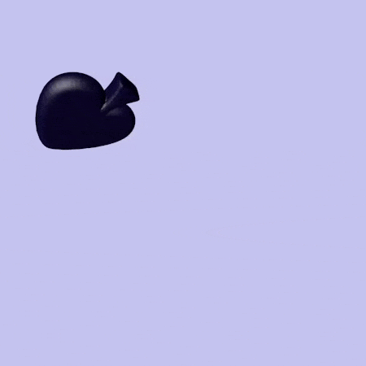
Разница становится очевидной, если их наложить друг на друга:
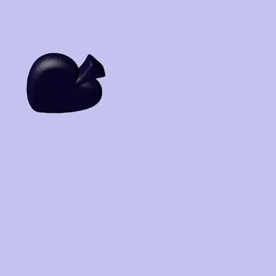
Как избежать «странных» движений, мы узнаем в следующей главе.
Анимация scale
Анимация scale используется часто для изменения масштаба
и для появления из точки.
В этих случаях по всем компонентам
scale.x, scale.y,
scale.z происходит равномерно. И такая
анимация ничем
не отличается от аналогичной
на плоскости.
Если нам нужно сделать анимацию вытяжения или сжатия по одной из осей, то нужно придерживаться принципа анимации Squash and stretch (сжатие и растяжение).
Анимация эластичной звезды будет выглядеть топорно, если сжимать/разжимать будем только по оси Y.
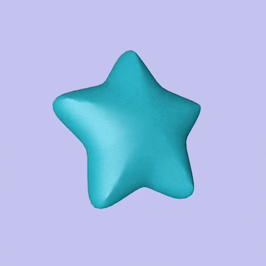
А если увеличение scale по Y вычесть равномерно из X и Z, то получится значительно лучше:
Это примерное описание. Чтобы быть точными, нужно разделить
на scale.x = scale.z =
1 / Math.sqrt(scale.y). Но этой формулы придерживаться
не обязательно, разница может распределяться между
X и Z по-разному.
Здесь нужно смотреть на то, какая анимация
получается и придерживаться
референса, если он есть.
Например, нам может быть нужно сделать звезду более эластичной по оси Z, чтобы она сплющивалась при растяжении.
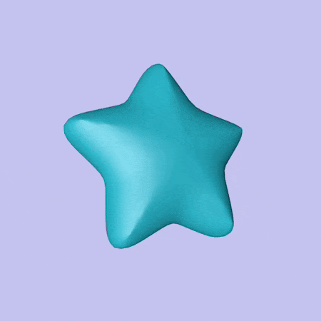